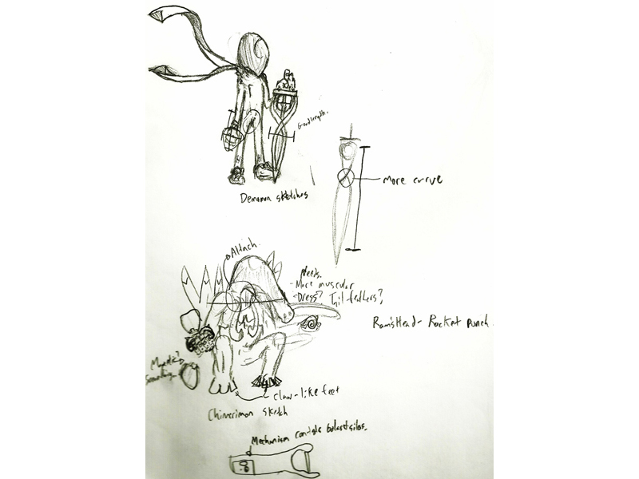
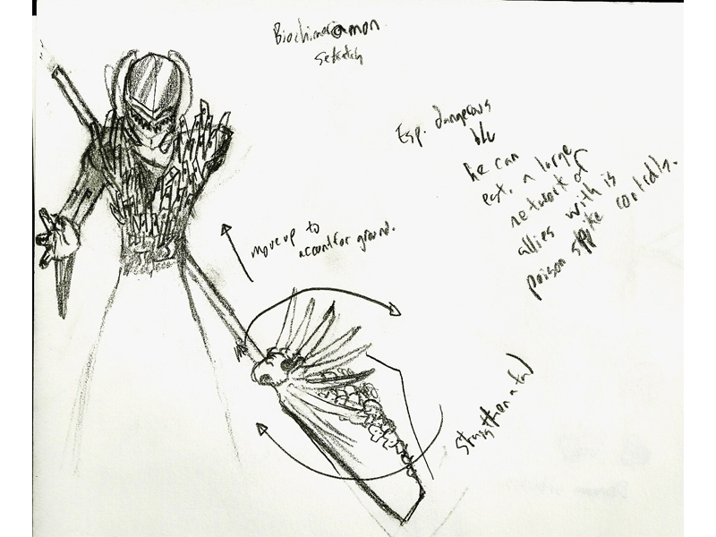
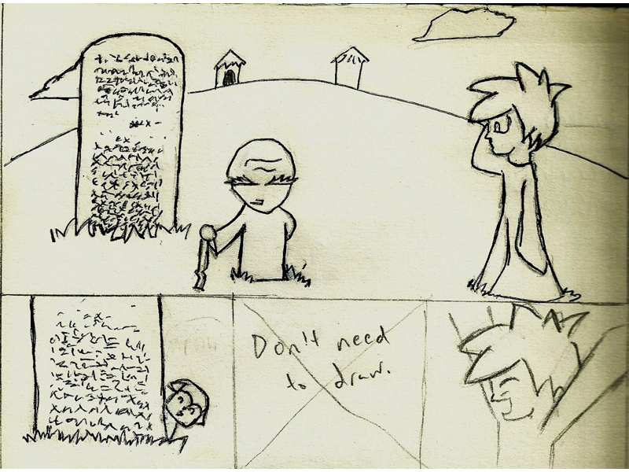
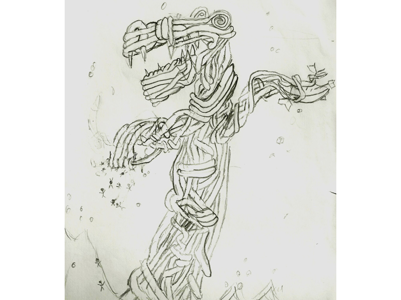
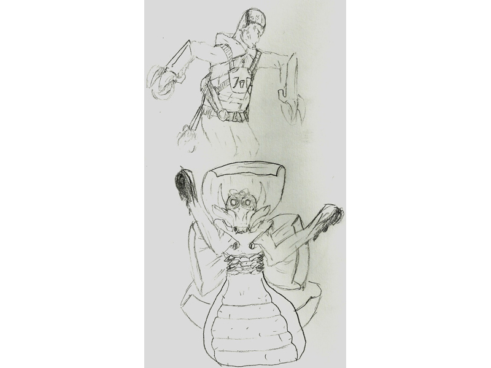
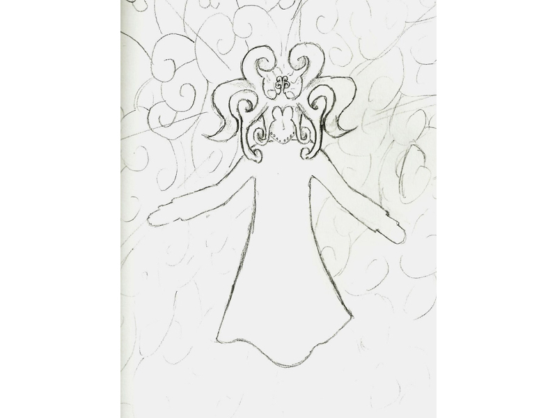
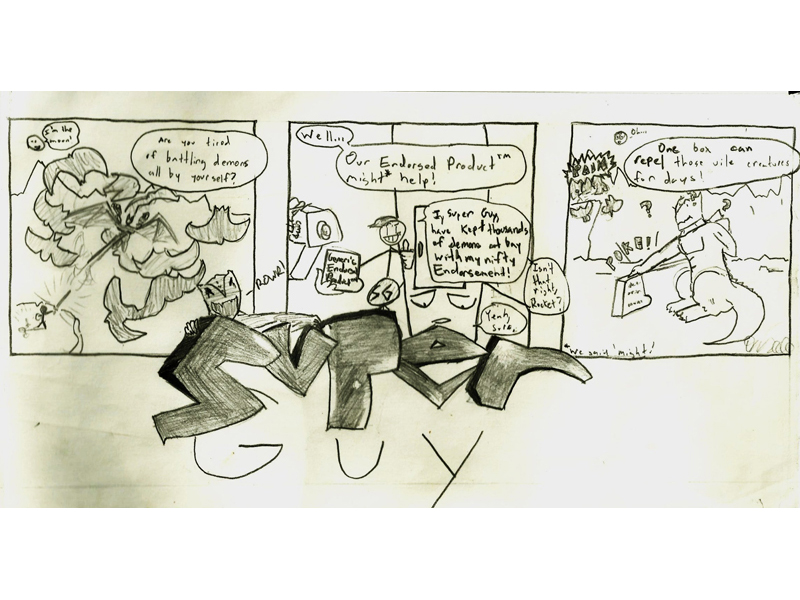
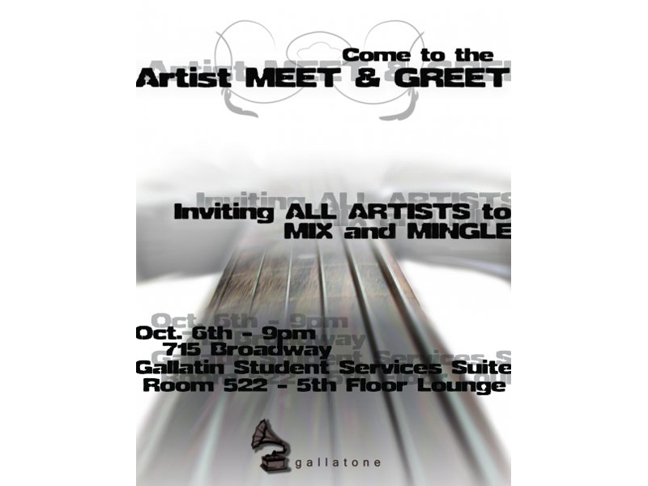

|
|
|

| Page: 1 2 3 4 |
|---|
I don't know what this is for, but it's pretty badass. If you look at the shoulder joints on the lizard thing, you can see that there's actually empty space. I could only best describe this as sort of a skinned-over mock jaw that doesn't have any kind of digestive tract inside, just muscle.
I REALLY wanted to head off a live-action digimon movie for awhile; one day I'll probably post up a concept explaining how I thought it would go down. These are sketches I drew for the antagonist; its rookie (demo.mon) and champion (chimeri.mon) levels. All the little things that look like the letter "I" are the proportions I actually envisioned, but was unable to draw and was too lazy to draw again.
The ultimate version of demo.mon; biochimeri.mon. I have a mega version somewhere, but I didn't really finish because I didn't think there would be enough time in the actual movie itself to fully develop to that point without kind of rushing things.
This was for a high school project; I had to visualize what a tribal mystic (an egwugwu) were to look like in the book we were reading; "Things Fall Apart" by Cinua Achebe. I also made a video for that project, but alas, it was lost to the sands of time. I think I was an underclassman at the time.
A failed comic strip, dubbed 'STRAP and IKE,' that I tried to submit to the high school newspaper my freshman year. I must say that the journalism class I took that year tried to beat every creative sense out of me. It made me resent high school, but it wasn't the only thing that did.
It's a tentaclely kraken made out of tentacles! Ah! I probably drew this when I was twelve, but I still like the concept.
The crinkly notebook paper makes this sketch look pretty cool.
The fireballs this guy shoots must have boomerangs installed in them, because they're definitely comin' right back at him. Bad choice, Mr. Engineer.
It's um... jetpack man and his gooey-handed insect sidekick. Yeah!
Woah. Trippy, man.
Well... yeah. That's what that is.
Another dumb little comic of mine. Here there's... well there's a bunch of stuff going on in the deeper levels of it that I don't feel like pointing out right now. It's apparent randomness is still amusing to me though.
The first of several posters I designed for GALLATONE.
 |
 |
|---|